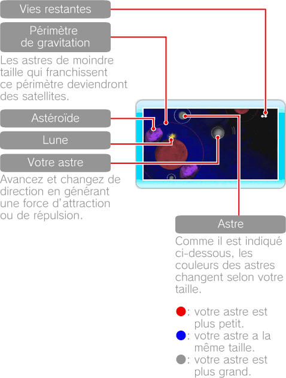
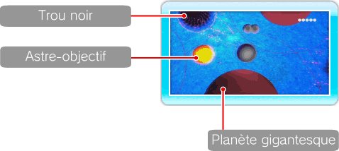
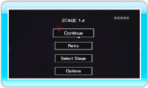

9 |
Ecrans de jeu |
 |
Seul votre environnement proche apparaît à l’écran qui défile dans la direction suivie par votre astre. 


● Carte du niveau Si vous appuyez sur

● Menu de pause Appuyez sur
Note: votre nombre de vies sera réinitialisé si vous sélectionnez RETRY ou SELECT STAGE. |
 durant votre partie, vous pouvez voir la carte du niveau et la parcourir avec
durant votre partie, vous pouvez voir la carte du niveau et la parcourir avec  . Appuyez de nouveau sur
. Appuyez de nouveau sur  durant votre partie pour afficher le menu de pause.
durant votre partie pour afficher le menu de pause. |
 |
 |